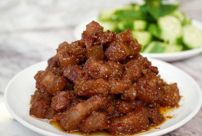

Cùng bắt tay làm thử thôi nào!
Nguyên liệu:
- Thịt ba chỉ: 300g
- Sả băm: 20g
- Tỏi: 3 tép
- Ớt hiểm đỏ: 2 trái
- Gứng tươi: 20g
- Mắm ruốc Huế
- Hạt nêm. đường
Cách làm món thịt kho mắm ruốc Huế- Thịt ba chỉ bạn rửa sạch, để cho ráo nước, cắt thành miến nhỏ dài 2cm dày 0,5cm.
- Tỏi bóc vỏ băm nhuyễn. Ớt hiểm bỏ hạt, băm nhuyễn.
- Gừng bạn gọt vỏ, cắt thành sợi.
- Bạn phi thơm tỏi băm, sả, ớt với 1/5 muỗng dầu ăn.
- Cho thịt ba chỉ vào xào cho săn lại, nêm một ít đường và hạt nêm. Đến khi nào thịt vàng bạn cho 2 muỗng mắm ruốc Huế vào kho với lửa nhỏ khoảng 5 phút rồi tắt bếp cho gừng cắt sợi vào đảo đều.
- Thịt kho mắm ruốc Huế dùng chung với cơm nóng, dưa leo, chuối chát và khế chua rất ngon.
*** Chú ý: Bạn không nên cho nước vào sẽ làm mất độ sánh tự nhiên của món ăn.